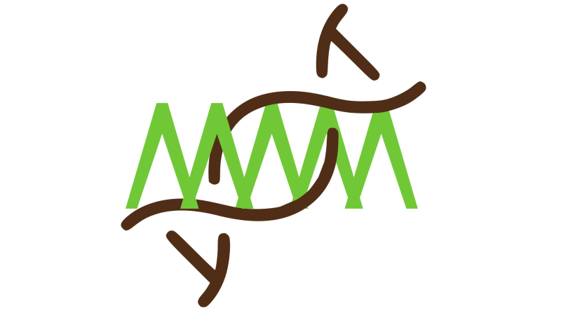
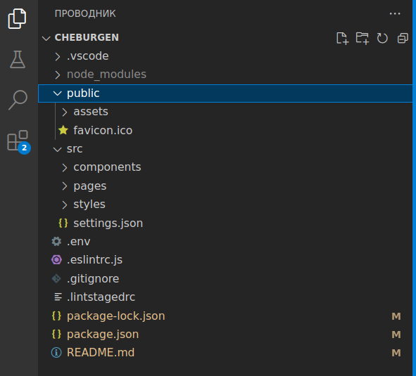

Cheburgen: SSR/SSG сервер
Обзор современных веб-технологий
Современный подход к веб-разработке предполагает слабое участие сервера в визуализации контента. Он в основном занят формированием абстрактных данных и передачей их клиенту в соответствии с концепциями REST-API/CRUD в форматах json, xml и т.п. Формированием динамического внешнего вида веб-страницы занимается, в основном, сам браузер. Именно на организацию такого его поведения направлены современные фреймворки (Angular, React, Vue, Svelt и другие). Фреймворки позволяют создавать многократно используемые компоненты, обеспечивают реактивность во взаимодействии с пользователем, могут корректировать внешний вид с помощью встроенных css-инструментов.
Разработка с помощью фреймворков завоевала большую популярность, но у нее есть существенный недостаток. С точки зрения поисковой оптимизации (SEO) такие страницы выглядят абсолютно пустыми. Например, можно написать сколь угодно богатое возможностями интерактивное React-приложение, "обернув" его вокруг корневого элемента, но поисковые машины увидят лишь
<div id="root"></div>
Такой сайт вряд ли займет высокие позиции в рейтингах Google, Яндекс и других кравлеров. А вот такая веб-страница продвинется гораздо выше:
<h1>Пирожки на Казанском вокзале</h1>
<ul>
<li>с капустой - 20 руб.</li>
<li>с повидлом - 30 руб.</li>
<li>с ливером - 45 руб.</li>
</ul>
Однако писать на чистом html утомительно. Задействовать многократно используемые компоненты при таком подходе можно лишь копируя их в редакторе через буфер обмена. Именно поэтому сохраняет популярность технология MVC, когда html-документы формируются на стороне сервера, который при необходимости инжектирует в них данные. В качестве примеров можно привести CGI, PHP, ASP, JSP и т.д.
У MVC-продуктов есть, однако, существенный недостаток: при переключении со страницы на страницу конечный пользователь видит на доли секунды белый экран (white flash). Поэтому для человеческого зрения комфортнее приложения в формате SPA (Single Page Application), т.е. такие, где динамически перерисовывается только та часть экрана, которая действительно требует обновления, которые, как правило, опираются на запрашиваемые у сервера REST-данные. Таким образом, мы снова приходим к клиентским технологиям, неблагоприятным для SEO. Однако в разработке возможны компромиссы: те элементы, которые требуют интерактивности (например, при валидации форм) можно писать на фреймворках, остальное на html. Единственная проблема, которая при этом остается - затрудненность привлечения многократно используемых компонентов. Эту задачу и решают нижеописанные технологии.
Технологии SSR/SSG
SSR (Server Side Rendering) напоминает по принципу действия MVC. Формирование веб-страниц производится на стороне сервера, только собираются они из компонентов, написанных на "клиентских" фреймворках (React и Next, Vue и Nuxt и т.д.).
SSR-бэкендами обзавелись в последнее время все популярные фреймворки. Однако изначально они не предназначались для таких целей и, по-видимому, не имеют явных преимуществ перед "старыми" MVC-технологиями. Складывается даже впечатление, что SSR стал паническим ответом разработчиков клиентских фреймворков на претензии пользователей о том, что их приложения не попадают на высокие позиции в поисковых системах. Кроме того, превратить приложение, написанное, скажем, на "клиентском" React'e в SSR-React не так уж просто. Многие фреймворк-разработчики не обладают для этого достаточной квалификацией. Тем не менее, SSR - это компромисс, позволяющий как сгенерировать насыщенные возможностями веб-приложения, так и оставить в них достаточно html-разметки, чтобы содержание было обнаружено поисковыми машинами.
Окончательным этапом формирования страниц на серверах с поддержкой SSR является SSG - Server Side Generation, т.е. превращение всех страниц сайта в статические файлы, которые можно выгрузить на простой хостинг. Как правило, это html, css, js файлы, непосредственно распознаваемые браузерами.
Cheburgen: SSR/SSG без фреймфорков
Cheburgen - веб-сервер для разработки статических страниц. Результат отображается по мере правки кода, т.е. после сохранения исходного файла страница в браузере обновляется.
Исходный код сайта находится в директории src, в которой созданы три раздела: pages, components и styles. В первой - шаблоны в формате pug, который поддерживает составление страниц из многократно используемых компонентов. Они помещены в соответствующую директорию - components. Директория styles предназначена для хранения стилевых таблиц в формате sass/scss.

Поддерживается сборка компонентов, описанных в файлах _rollup.config.mjs (см. пример в директории src/pages/funny). Они могут быть написаны в форматах jsx, vue, svelte и любых других, поддерживаемых сборщиком rollup и его плагинами.
Сервер поддерживает вставку иконок bootstrap-icons, хотя можно интегрировать и другие наборы.
Установка и запуск
Установка шаблона производится командой
npx cheburgen-setup@latest <my-app>
Здесь <my-app> следует заменить на имя директории, в которой будет вестись разработка. После установки следует перейти в нее и выполнить
npm i
npm run dev
Затем открыть в браузере адрес.
Упаковка и выгрузка
Закончив разработку веб-страниц, следует выполнить
npm run build
В результате сформируется директория dist, в которой окажутся файлы в стандартных веб-форматах. Шаблоны pug будут преобразованы в html, scss - в обычные css-файлы. В dist также попадает все содержимое директории public в неизменном виде.
После сборки можно запустить live-server в среде VS-Code и убедиться в добротности результата. Он должен выглядеть так же, как и при работающем сервере.
О происходжении названия
Слово "чебурген" упоминается в советских анекдотах как указание на некий гибрид, созданный из, казалось бы, несовместимых компонентов. Сервер Cheburgen также гетерогенен. В него интегрированы технологии от многих разработчиков, причем заложена возможность расширения их круга. Можно, например, добавлять форматы файлов, из которых будут получаться веб-страницы (jsx, vue и др.), наборы иконок, стилевые предпроцессоры и т.п.
Логотип проекта также содержит отсылку к известному мультфильму. От Крокодила Гены на нем зеленая ломаная линия, от Чебурашки - повернутая на 45 градусов голова с ушами, символизирующая также спираль ДНК.